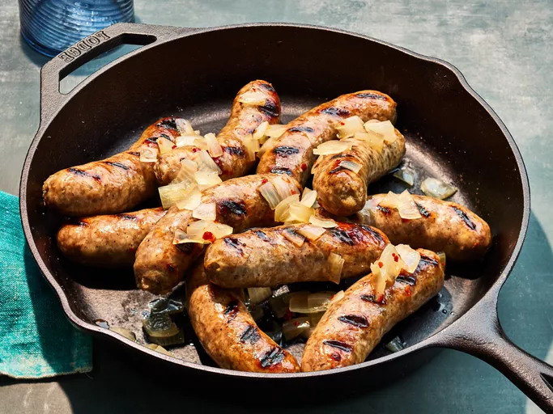

Beer Brats

Description
Juicy, beer-simmered brats are bursting with savory flavor in this 5-star recipe. Learn to make smoky, spicy, and perfectly customizable bratwurst sausages that are cooked in a boozy blend of spices before being grilled to ballpark perfection.
Ingredients
- 4 (12 ounce) cans beer
- 1 large onion, thinly sliced
- 10 bratwurst
- 2 teaspoons of red pepper flakes
- 1 teaspoon garlic powder
- 1 teaspoon salt
Steps
- Gather all ingredients.
- Combine beer and onion slices in a large pot; bring to a boil.
- Add bratwurst, pepper flakes, garlic powder, salt, and pepper to beer and onion mixture. Reduce heat to medium and cook for 10 to 12 minutes.
- Meanwhile, preheat an outdoor grill for medium-high heat and lightly oil the grate.
- Transfer bratwurst to a plate. Reduce heat to low and let onions simmer until needed.
- Cook bratwurst on the preheated grill, turning occasionally to get char marks, until no longer pink in the middle, 5 to 10 minutes. An instant-read thermometer inserted into the center should read at least 160 degrees F (70 degrees C).
- Serve bratwurst with onions.